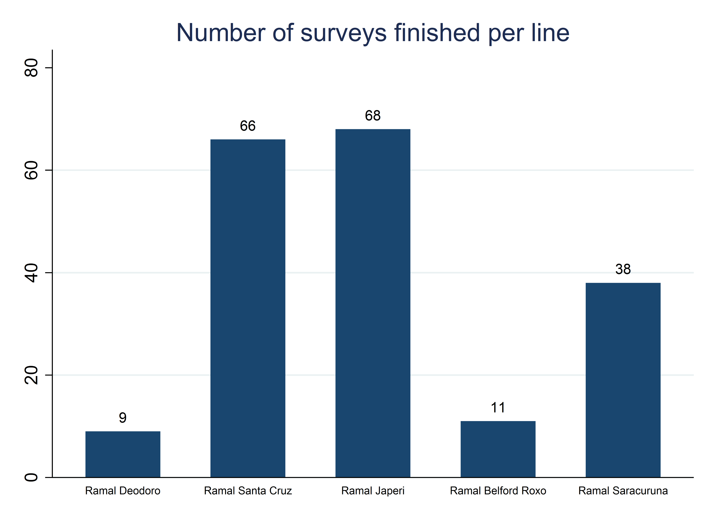
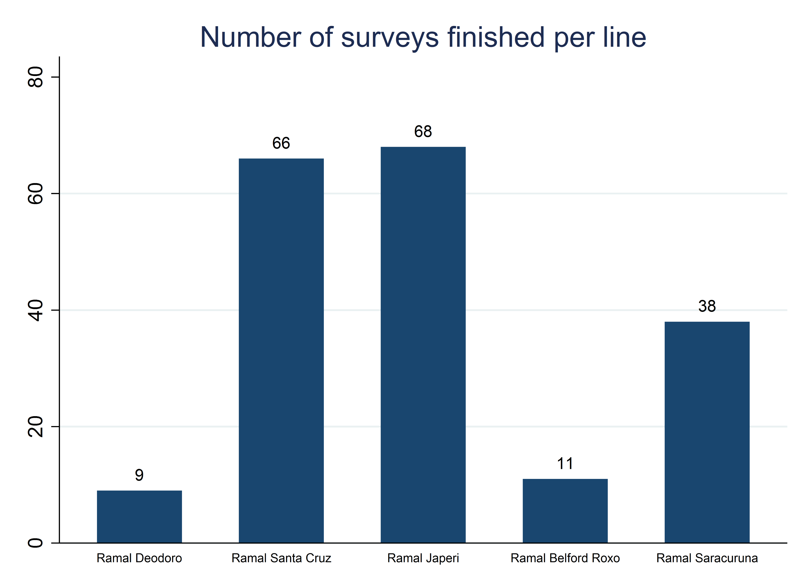

Chapter 4 Acquiring development data
Many research questions require the team to acquire original data, because no source of publicly available data addresses the inputs or outcomes of interest for the relevant population. Data acquisition can take many forms, including: primary data generated through surveys; private sector partnerships granting access to new data sources, such as administrative and sensor data; digitization of paper records, including administrative data; web scraping; data captured by unmanned aerial vehicles or other types of remote sensing; or novel integration of various types of datasets, such as combining survey and sensor data. Much of the recent push toward credibility in the social sciences has focused on analytical practices. However, credible development research depends, first and foremost, on the quality of the acquired data. Clear and careful documentation of the data acquisition process is essential for research reproducibility.
This chapter covers reproducible data acquisition, special considerations for generating high-quality survey data, and protocols for safely and securely handling confidential data. The first section discusses reproducible data acquisition: how to establish and document your right to use the data. This applies to all original data, whether collected for the first time through surveys or sensors or acquired through a unique partnership. The second section goes into detail on data acquisition through surveys, as this process is typically more involved than acquisition of secondary data, and has more in-built opportunities for quality control. It provides detailed guidance on the electronic survey workflow, from designing electronic survey instruments to monitoring data quality once fieldwork is ongoing. The final section discusses safe data handling, providing guidance on how to receive, transfer, store, and share confidential data. Secure file management is a basic requirement to comply with the legal and ethical agreements that allow access to personal information for research purposes.
Summary: Acquiring development data
The process of obtaining research data is unique to every project. However, there are basic structures and processes that are common to both data acquired from others and data generated by surveys:
1. When receiving data from others, ownership and licensing are critical. Before any data is transferred, you should be certain of all formal rights associated with that data. This includes:
- Ensuring that the partner has the right to share the data with you, especially if it contains PII
- Identifying the data owner and any restrictions the owner places on data use, storage, or handling
- Securing a data use agreement or license from the partner, outlining your rights and responsibilities regarding analysis, publication of results and derived data, re-distribution of data, and data destruction
2. Collecting high-quality data requires careful planning and attention to detail throughout the workflow. We cover best practices for all surveys, and detailed considerations for electronic surveys:
- Using the data map to produce and pilot draft instruments on paper, to focus on survey content
- Structuring questionnaires for electronic programming and pilot for function, taking into consideration features like pagination, ordering, looping, conditional execution, and instructions for enumerators
- Testing data outputs for analytical compatibility, such as code-friendly variable and value labels
- Training enumerators carefully, using the paper survey before the electronic template, assessing performance objectively throughout training, and transparently selecting top performers for fieldwork
- Assessing data quality in real-time, through scripted high frequency checks and diligent field validation
3. No matter how your data is acquired, secure data handling is essential. This includes:
- Encrypting data on all devices, in transit and at rest, beginning from the point of collection and including all intermediate locations such as servers and local devices
- Storing encryption keys using appropriate password management software with strong, unique passwords for all applications and devices with access
- Backing up data in case of total loss or failure of hardware and software at any site
Takeaways
TTLs/PIs will:
- Obtain appropriate legal documentation and permissions agreements for all data
- For surveys: support translation of the data map to survey instruments; oversee instrument development
- For surveys: Review and provide inputs to the project’s data quality assurance plan
- For surveys: Guide decisions on how to correct issues identified during data quality checks
- Oversee implementation of security measures; manage access codes, encryption keys, and hardware
- Determine and communicate institutionally-appropriate data storage and backup plans
RAs will:
- Coordinate with data providers, develop required technical documentation, archive all final documentation
- For surveys: draft, refine and program all survey instruments, following best practices for electronic survey programming and maintaining up-to-date and version-controlled paper and electronic versions
- For surveys: Coordinate closely with field staff on survey pilots and contribute to enumerator manuals
- For surveys: Draft a data quality assurance plan and manage the quality assurance process
- Implement storage and security measures for all data
Key Resources
- Manage Successful Impact Evaluation Surveys: course covers best practices for the survey workflow, from planning to piloting instruments and monitoring data quality. https://osf.io/resya/
- DIME Analytics Continuing Education for Field Coordinators: technical trainings and courses for staff implementing field surveys, updated regularly. https://osf.io/gmn38/
- SurveyCTO Coding Practices: suite of wiki articles covering common approaches to sophisticated design and programming in SurveyCTO. https://dimewiki.worldbank.org/SurveyCTO_Coding_Practices
- Monitoring Data Quality: DIME Wiki article covering communication, field monitoring, minimizing attrition, back checks, and data quality checks. https://dimewiki.worldbank.org/Monitoring_Data_Quality
Acquiring data ethically and reproducibly
Clearly establishing and documenting data access is critical for reproducible research. This section provides guidelines for establishing data ownership, receiving data from development partners, and documenting the research team’s right to use the data. It is the researchers’ responsibility to respect the rights of people who own the data and the people who are described by it; but also to make sure that information is as available and accessible as possible. These twin responsibilities can and do come into tension, so it is important to be fully informed about what other researchers are doing and to fully inform other researchers of what you are doing. Writing down and agreeing to specific details is a good way of doing that.
Determining data ownership
Before acquiring any data, it is critical to establish data ownership. Data ownership143 can sometimes be challenging to establish, as various jurisdictions have differing laws regarding data and information, and the research team may have their own information regulations.144 In some, data is implicitly owned by the people who it is about. In others, it is owned by the people who collected it. In still more, it is highly unclear and there are varying norms. The best approach is always to consult with a local partner, and enter into specific legal agreements establishing ownership, access, and publication rights. This is particularly critical where confidential data is involved – that is, when people are disclosing information to you that you could not obtain simply by observation or through public records.
If the research team is requesting access to existing data, they must enter into data licensing agreements to access the data and publish research outputs based on it. These agreements should make clear from the outset whether and how the research team can make the original data public, or publish any portion or derivative of the data.145 If the data is publicly accessible, this may be as simple to agreeing to terms of use on the website where the data can be downloaded. If it is original data that is not yet publicly accessible, the process is typically more complex and requires a documented legal agreement or memorandum of understanding.
If the research team is generating data directly, such as survey data, it is important to clarify up front who owns the data, and who will have access to it. These details need to be shared with respondents when they are offered the opportunity to consent to participate in the study. If the research team is not collecting the data directly – for example, if a government, private company, or research partner is doing the data collection – make sure that you have an explicit agreement about who owns the resulting data.
The contract for data collection should include specific terms as to the rights and responsibilities of each stakeholder. It must clearly stipulate which party owns the data produced, and that the research team maintains full intellectual property rights. The contract should also explicitly indicate that the contracted firm is responsible for protecting respondent privacy, that the data collection will not be delegated to any third parties, and that the data will not be used by the firm or subcontractors for any purpose not expressly stated in the contract, before, during or after the assignment. The contract should also stipulate that the vendor is required to comply with ethical standards for social science research, and adhere to the specific terms of agreement with the relevant Institutional Review Board (IRB)146 or applicable local authority. Finally, it should include policies on reuse, storage, and retention or destruction of data.
Research teams that acquire original data must also consider data ownership downstream, through the terms they will use to release that data to other researchers or to the general public. The team should consider whether they can publish the data in full after removing personal identifiers. For example, the team must consider whether it would be acceptable for their data to be copied and stored on servers anywhere in the world, whether they would prefer to manage permissions on a case-by-case basis, and whether they expect that data users would cite or credit them. Similarly, the team can require users in turn to release their derivative datasets or publications under similar licenses, or offer use without restriction. There are simple license templates for offering many of these permissions, but, at the planning stage, the team should make sure that all licensing agreements, data collection contracts, and informed consent processes used to acquire the data specifically detail those future uses.
Demand for Safe Spaces Case Study: Determining Data Ownership
The Demand for Safe Spaces study relied on three data sources, all of which had different data ownership considerations.
- Crowdsourced ride data from the mobile app: the research team acquired this data through a contract with the technology firm responsible for developing and deploying the application. The terms of the contract specified that all intellectual property in derivative works developed using the dataset were the property of the World Bank.
- Platform Survey and Implicit Association Test data: this original data was collected by a small team of consultants contracted by the research team, using a survey instrument developed by the research team. The contract specified that the data collected by the consultants, and all derivative works, are the sole intellectual property of the World Bank.
- Crime data: the team also used one variable (indicating crime rate at the Supervia stations) from publicly accessible data produced by Rio’s Instituto de Segurança Pública. The data is published under Brazil’s Access to Information Law and is available for download from the Institute’s website.
Obtaining data licenses
Data licensing147 is the formal act of the dataset owner giving some data rights to a specific user, while retaining ownership of the dataset. If you are not the owner of the dataset you want to analyze, you must enter into a licensing agreement to access it for research purposes. Similarly, when you own a dataset, you must consider whether you will make the dataset accessible to other researchers, and what terms-of-use you require.
If the research team requires access to existing data for novel research, terms of use should be agreed on with the data owner, typically through a data licensing agreement. These terms should specify what data elements will be received, what purposes the data will be used for, and who will have access to the data. Keep in mind that the data owner is likely not highly familiar with the research process, and therefore may be surprised at some of the things you want to do if you are not clear up front. You will typically want intellectual property rights to all research outputs developed used the data, a license for all uses of derivative works, including public distribution (unless ethical considerations contraindicate this). This is important to allow the research team to store, catalog, and publish, in whole or in part, either the original licensed dataset or datasets derived from the original. Make sure that the license you obtain from the data owner allows these uses, and that you consult with the owner if you foresee exceptions with specific portions of the data.
The World Bank has a template Data License Agreement which DIME follows. The template specifies the specific objectives of the data sharing, and whether the data can be used only for the established purpose or for other objectives after it is obtained. It classifies the data into one of four access categories, depending on who can access the data by default and whether case-by-case authorization for access is needed. The data provider may impose similar restrictions to sharing derivative data and any or all of the associated metadata. The template also specifies the required citation for the data. While you do not need to use the World Bank’s template or its access categories if you do not work on a World Bank project, we still think it is important that you use this information in two ways. First, make sure to base your Data License Agreement on some template. Hand-written agreements can leave many legal ambiguities or gaps where the permissions given to the research team are unclear or incomplete. Second, we strongly recommend you to categorize data using some variation of this system. Then you should have different standard procedures for each category, so that the intended processes for handling the data are clear.
Documenting data received from partners
Research teams granted access to existing data may receive that data in a number of different ways. You may receive access to an existing server, physical access to extract certain information, or a one-time data transfer. In all cases, you must take action to ensure that data is transferred through secure channels so that confidentiality is not compromised. See the section Handling data securely later in this chapter for how to do that. Keep in mind that compliance with ethical research standards may in some cases require a stricter level of security than initially proposed by the partner agency. It is also critical at this stage to request any and all available documentation for the data; this could take the form of a data dictionary or codebook, a manual for administrative data collection system, detailed reports or operating procedures, or another format. If no written documentation is available, interview the person(s) responsible for managing the data to learn as much as possible about the data; the interview notes should be archived with data documentation.
At this stage, it is very important to assess
documentation and cataloging of the data and associated metadata.
It is not always clear what pieces of information will jointly constitute a research dataset,
and many of the datasets you receive will not be organized for research.
You should always retain the original data exactly as received
alongside a copy of the corresponding ownership agreement or license.
You should make a simple README document noting the date of receipt,
the source and recipient of the data,
and a brief description of each file received.
All too often data will be provided as vaguely-named spreadsheets,
or digital files with non-specific titles,
and documentation will be critical for future access and reproducibility.
Eventually, you will want to make sure that you are creating a set of documents that can be properly submitted to a data catalog and given a reference and citation. The metadata – documentation about the data – is critical for future use of the data. Metadata should include documentation of how the data was created, what they measure, and how they are to be used. In the case of survey data, this includes the survey instrument and associated manuals; the sampling protocols and field adherence to those protocols, and any sampling weights; what variable(s) uniquely identify the dataset(s), and how different datasets can be linked; and a description of field procedures and quality controls. DIME uses as a standard the Data Documentation Initiative (DDI), which is supported by the World Bank’s Microdata Catalog.148
As soon as the desired pieces of information are stored together, think about which ones are the components of what you would call a dataset. Often, when you are receiving data from a partner, even highly-structured materials such as registers or records are not, as received, equivalent to a research dataset, and require initial cleaning, restructuring, or recombination to reach the stage we would consider a raw research dataset. This is as much an art than a science: you want to keep information together that is best contextualized together, but you also want to information granular as much as possible, particularly when there are varying units of observation. There usually won’t be a single correct way to answer this question, and the research team will need to decide how to organize the materials received. Soon, you will begin to build research datasets from this set of information, and these will become your original clean data, which will be the material published, released, and cited as the starting point of your data. (If funders or publishers request that “raw” data be published or cataloged, for example, this is the dataset that you should provide, unless they specifically require data in the original format you received it.) These first datasets created from the received materials are the objects you need to catalog, release, and license. Now is a good time to begin assessing disclosure risk and/or seek publication licenses in collaboration with data providers, while you are in close contact with them.
Collecting high-quality data using electronic surveys
In this section, we detail specific considerations for acquiring high-quality data through electronic surveys of study subjects. If your project will not use any survey data, you may want to skip this section. There are many excellent resources on questionnaire design and field supervision, but few that cover the particular challenges and opportunities presented by electronic surveys. There are also many survey software options available to researchers, and the market is rapidly evolving. Therefore, we focus on specific workflow considerations for digitally-collected data, and on basic concepts rather than software-specific tools.
Electronic data collection technologies have greatly accelerated our ability to bring in high-quality data using purpose-built survey instruments, and therefore improved the precision of research. At the same time, electronic surveys create new pitfalls to avoid. Programming electronic surveys efficiently requires a very different mindset than writing paper-based surveys; careful preparation can improve survey efficiency and data quality. This section will outline the major steps and technical considerations you will need to follow whenever you field a custom survey instrument, no matter the scale.
Designing survey instruments
A well-designed questionnaire results from careful planning, consideration of analysis and indicators, close review of existing questionnaires, survey pilots, and research team and stakeholder review. There are many excellent resources on questionnaire design, such as from the World Bank’s Living Standards Measurement Survey.149 The focus of this section is the design of electronic field surveys, often referred to as Computer Assisted Personal Interviews (CAPI).150 Although most surveys are now collected electronically, by tablet, mobile phone or web browser, questionnaire design151 (content development) and questionnaire programming152 (functionality development) should be seen as two strictly separate tasks. Therefore, the research team should agree on all questionnaire content and design a version of the survey on paper before beginning to program the electronic version. This facilitates a focus on content during the design process and ensures teams have a readable, printable version of their questionnaire. Most importantly, it means the research, not the technology, drives the questionnaire design.
We recommend this approach for three reasons. First, an easy-to-read paper questionnaire is very useful for training data collection staff, which we will discuss further in the enumerator training section below. Second, finalizing the paper version of the questionnaire before beginning any programming avoids version control concerns that arise from concurrent work on paper and electronic survey instruments. Third, a readable paper questionnaire is a necessary component of data documentation, since it is difficult to work backwards from the survey program to the intended concepts.
The workflow for designing a questionnaire will feel much like writing an essay: begin from broad concepts and slowly flesh out the specifics.153 It is essential to start with a clear understanding of the theory of change154 and research design155 for your project. The first step of questionnaire design is to list key outcomes of interest, as well as the main covariates to control for and any variables needed for the specific research design. The ideal starting point for this is a pre-analysis plan.156
Use the list of key outcomes to create an outline of questionnaire `modules}. Do not number the modules; instead use a short prefix as numbers quickly get outdated when modules are reordered. For each module, determine if the module is applicable to the full sample, or only to specific respondents, and whether or how often the module should be repeated. A few examples: a module on maternal health only applies to households with a woman who has children, a household income module should be answered by the person responsible for household finances, and a module on agricultural production might be repeated for each crop the household cultivated. Each module should then be expanded into specific indicators to observe in the field.157 Questionnaires for impact evaluation must also include ways to document the reasons for attrition and treatment contamination. These are essential data components for completing CONSORT records, a standardized system for reporting enrollment, intervention allocation, follow-up, and data analysis through the phases of a randomized trial.158
Demand for Safe Spaces Case Study: Designing Survey Instruments
The context for the platform survey and implicit association test presented some unique design challenges. The respondents to the survey were commuters on the platform waiting to board the train. Given the survey setting, respondents could need to leave at any time, so only a random subset of questions was asked to each participant. The survey included a total of 25 questions on commuting patterns, preferences about the use of the reserved car, perceptions about safety, and perceptions about gender issues and how they affect riding choices. 1,000 metro riders answered the survey while waiting for their train. The team tested the questions extensively through pilots before commencing data collection. Based on the pilot data and feedback, questions that were causing confusion were reworded, and the questionnaire was shortened to reduce attrition. The research team designed a custom instrument to test for implicit association between using/not using the women-reserved space and openness to sexual advances. To determine the best words to capture social stigma, two different versions of the IAT instrument were tested with “strong” and “weak” language (for example, “vulgar” vs “seductive”) and the response times compared to other well-established instruments. For the development of all protocols and sensitive survey questions, the research team requested inputs and feedback from gender experts at the World Bank and local researchers working on gender related issues to ensure that these were worded appropriately.
The survey instrument is available at https://git.io/JtgqD and the survey protocols are available at https://git.io/Jtgqy.
Piloting survey instruments
A survey pilot is critical to finalize survey design.159 The pilot must be done out-of-sample, but in a context as similar as possible to the study sample.160 The survey pilot includes three steps: a pre-pilot, a content-focused pilot, and a data-focused pilot.161
The first step is a pre-pilot. The pre-pilot is a qualitative exercise, done early in the questionnaire design process. The objective is to answer broad questions about how to measure key outcome variables, and gather qualitative information relevant to any of the planned survey modules. A pre-pilot is particularly important when designing new survey instruments.
The second step is a content-focused pilot. The objectives at this stage are to improve the structure and length of the questionnaire, refine the phrasing and translation of specific questions, check for potential sensitivities and for enumerator/respondent interactions, and confirm coded response options are exhaustive.162 In addition, it is an opportunity to test and refine all survey protocols, such as how units will be sampled or pre-selected units identified.163 The content-focused pilot is best done on pen and paper, before the questionnaire is programmed, because changes at this point may be deep and structural, which are hard to adjust in code. It is important at this point to test both the validity and the reliability of the survey questions; for this reason it is important to conduct the content-focused pilot with a sufficiently large sample (the exact requirement will depend on the research sample; a very rough rule of thumb is a minimum of 30 interviews.
The final stage is a data-focused pilot. After the content is finalized, proceed with programming a draft version of the electronic survey instrument. The objective of this pilot is to refine the questionnaire programming; this is discussed in detail in the following section.
Programming electronic survey instruments
Once the team is satisfied with the content and structure of the survey, it is time to move on to implementing it electronically. Electronic data collection has great potential to simplify survey implementation and improve data quality. But it is critical to ensure that electronic survey instruments flow correctly and produce data that can be used in statistical software, before data collection starts. Electronic questionnaires are typically developed in a spreadsheet (usually using Excel or Google Sheets) or a software-specific form builder, all of which are accessible even to novice users. We will not address software-specific form design in this book; rather, we focus on coding and design conventions that are important to follow for electronic surveys regardless of software choice.164 Survey software tools provide a wide range of features designed to make implementing even highly complex surveys easy, scalable, and secure. However, these are not fully automatic: you need to actively design and manage the survey. Here, we discuss specific practices that you need to follow to take advantage of electronic survey features and ensure that the exported data is compatible with your statistical software.
From a data perspective, questions with coded response options165 are always preferable to open-ended questions.166 The content-based pilot is an excellent time to ask open-ended questions and refine fixed responses for the final version of the questionnaire – do not count on coding up lots of free text after a full survey. Coding responses helps to ensure that the data will be useful for quantitative analysis. Two examples help illustrate the point. First, instead of asking “How do you feel about the proposed policy change?”, use techniques like Likert scales.167 Second, if collecting data on things like medication use or food supplies, you could collect: the brand name of the product; the generic name of the product; a coded identifier for the item; or the broad category to which each product belongs (“antibiotics” or “staple foods”, for example).168 All four may be useful for different reasons, but the latter two are likely to be the most useful for rapid data analysis. The coded identifiers require providing a translation dictionary to field staff, but enables automated rapid recoding for analysis with no loss of information. The broad category requires agreement on the groups of interest, but allows for much more comprehensible top-line statistics and data quality checks. Rigorous field testing is required to ensure that answer categories are comprehensive; however, it is best practice to include an other, specify option. Keep track of those responses in the first few weeks of field work. Adding an answer category for a response frequently showing up as other can save time, as it avoids extensive post-coding.
It is essential to name the fields in your questionnaire
in a way that will also work in your data analysis software.
Most survey programs will not enforce this by default,
since limits vary across statistical software,
and survey software will encourage you
to use long sentences as question labels
and detailed descriptions as choice options.
This is what you want for the enumerator-respondent interaction,
but you should already have analysis-compatible labels programmed in the background
so the resulting data can be rapidly imported in analytical software.
There is some debate over how exactly individual questions should be identified:
formats like hq_1 are hard to remember and unpleasant to reorder,
but formats like hq_asked_about_loans quickly become cumbersome.
We recommend using descriptive names with clear prefixes so that variables
within a module stay together when sorted alphabetically.169
Variable names should never include spaces or mixed cases
(we prefer all-lowercase naming).
Take special care with the length: very long names will be cut off in some softwares,
which could result in a loss of uniqueness and lots of manual work to restore compatibility.
We further discourage explicit question numbering,
at least at first, as it discourages re-ordering questions,
which is a common recommended change after the pilot.
In the case of follow-up surveys, numbering can quickly become convoluted,
too often resulting in uninformative variables names like
ag_15a, ag_15_new, ag_15_fup2, and so on.
Using electronic survey features to enhance data quality
Electronic surveys are more than simply a paper questionnaire displayed on a mobile device or web browser. All common survey software allows you to automate survey logic and include hard or soft constraints on survey responses. These features make enumerators’ work easier, and they create the opportunity to identify and resolve data issues in real time, simplifying data cleaning and improving response quality. Well-programmed questionnaires should include most or all of the following features:
- Localization: the survey instrument should display full-text questions and responses in all potential survey languages, and it should also have English and code-compatible versions of all text and labels.
- Survey logic: built-in tests should be included for all logic connections between questions, so that only relevant questions appear, rather than relying on enumerators to follow complex survey logic. This covers simple skip codes, as well as more complex interdependencies (e.g., a child health module is only asked to households that report the presence of a child under 5).
- Range checks: add range checks for all numeric variables to catch data entry mistakes (e.g.
agemust be less than 120). - Confirmation of key variables: require double entry of essential information (such as a contact phone number in a survey with planned phone follow-ups), with automatic validation that the two entries match and rejection and re-entry otherwise.
- Multimedia: electronic questionnaires facilitate collection of images, video, and geolocation data directly during the survey, using the camera and GPS built into the tablet or phone.
- Preloaded data: data from previous rounds or related surveys can be used to prepopulate certain sections of the questionnaire, and validated during the survey.
- Filtered response options: filters reduce the number of response options dynamically (e.g. filtering a “cities” choice list based on the state selected).
- Location checks: enumerators submit their actual location using in-built GPS, to confirm they are in the right place for the interview.
- Consistency checks: check that answers to related questions align, and trigger a warning if not so that enumerators can probe further (e.g., if a household reports producing 800 kg of maize, but selling 900 kg of maize from their own production).
- Calculations: make the electronic survey instrument do all math, rather than relying on the enumerator or asking them to carry a calculator.
All established survey software include debugging and test options
to correct syntax errors and make sure that
the survey instruments will successfully compile.
This is not sufficient, however, to ensure that the resulting dataset
will load without errors in your data analysis software of choice.
DIME Analytics developed the ietestform command,170
part of the Stata package iefieldkit,171
to implement a form-checking routine for SurveyCTO,
a proprietary implementation of the open source Open Data Kit (ODK) software.
Intended for use during questionnaire programming and before field work,
ietestform tests for best practices
in coding, naming and labeling, and choice lists.
Although ietestform is software-specific,
many of the tests it runs are general and important to consider regardless of software choice.
To give a few examples, ietestform tests that no variable names exceed
32 characters, the limit in Stata (variable names that exceed that limit will
be truncated, and as a result may no longer be unique).
It checks whether ranges are included for numeric variables.
ietestform also removes all leading and trailing blanks from response lists,
which could be handled inconsistently across software.
The final stage of survey piloting, the data-focused pilot, should be done at this stage (after the questionnaire is programmed). The objective of this data-focused pilot172 is to validate the programming and export a sample dataset. Significant desk-testing of the instrument is required to debug the programming as fully as possible before going to the field. It is important to plan for multiple days of piloting, so that any debugging or other revisions to the electronic survey instrument can be made at the end of each day and tested the following, until no further field errors arise. The data-focused pilot should be done in advance of enumerator training.
Training enumerators
Once a survey instrument is designed, piloted on paper to refine content, programmed, piloted electronically to refine the data, and fully translated to any local languages, it is time to prepare to train the field staff who will be responsible for conducting interviews. The following guidelines for enumerator training apply regardless of whether data will ultimately be collected in person or remotely, with the only significant differences being in terms of survey protocols and the nature of the field practice (which could be in-person or by phone).
The first step is to develop a detailed enumerator manual.173 The manual should explain each question in the survey instrument, address any issues that arose during piloting and cover frequently asked questions. The manual must also describe survey protocols and conventions, such as how to select or confirm the identity of respondents, and standardized means for recording responses such as “Don’t know.”174 The enumerator manual serves as the basis for the enumerator training. We recommend the training to be divided into two sessions: first a training-of-trainers, and then the enumerator training. The training-of-trainers should include the field supervisors and any other relevant management staff from the organization responsible for data collection, and should be led by the research team. The objective is to ensure the survey leaders are deeply familiar with the survey instrument and protocols, so that they can support and supervise enumerators going forward. The training-of-trainers typically lasts a few days, though exact length will depend on the complexity of the survey instrument and experience level of the staff.
Enumerator training includes all field staff, and should be jointly led by the research team and the survey managers.175 This training typically lasts one to two weeks, though exact length will depend on complexity and experience; training for particularly challenging surveys may take a full month. Enumerator training has three components: review of the paper questionnaire, review of the electronic survey instrument, and field practice. The training schedule should allow for significant discussion and feedback after each component. Training with a paper survey instrument is critical, even for surveys that will be deployed electronically. Starting with paper ensures a focus on survey content and structure before diving into the technical components of the survey software. It is much easier for enumerators to understand the overall flow of a survey instrument and the range of possible participant responses on a paper survey than on a tablet, and it is easier to translate that understanding to digital functionality later.176 The classroom training should be very interactive, using methods such as role plays and mock interviews to test understanding of survey protocols and modules. The field practice should be carefully supervised, so as to provide individualized feedback to each enumerator.
When introducing the digital form of the survey, enumerators should submit data from practice interviews to the server, and the research team should run the standard data quality checks, to familiarize the enumerators with those standards for data quality and how quality issues will be communicated and resolved. It is essential to train more enumerators than will be required for the survey, and to include objective assessments throughout the training.177 These assessments can take the form of pop quizzes (which we recommend doing daily, using the same software as the survey), points for participation, and score on the field practice. At the end of the training, use the aggregate score to transparently select the final team of enumerators.
Checking data quality in real time
Once all field staff are trained, it is time to start collecting data. If you have followed all the guidance above, the stage should be set for quality data. To ensure high quality data in practice, the research team should develop a data quality assurance plan.178 A key advantage of electronic data collection methods, as compared to traditional paper surveys and one-time data dumps, is the ability to access and analyze the data as data collection is ongoing. Data issues can then be identified and resolved in real-time. Designing systematic data checks and running them routinely throughout data collection simplifies field monitoring and improves data quality. There are two important types of checks for data quality monitoring: high frequency quality checks and field validation.179
High frequency data quality checks should be scripted in advance of the start of data collection, so that data checks can start as soon as data starts to come in. A research assistant should run the high-frequency checks (HFCs) on a daily basis for the duration of the survey.180 HFCs should include monitor consistency and range of responses to each question, survey programming validation, tests for enumerator-specific effects, and checks for duplicate entries and completeness of online submissions vis-a-vis the field log.
High-frequency checks will only improve data quality
if the issues they catch are communicated to the team collecting the data
and corrections are documented and applied to the data.
This requires close communication with the field team,
so that enumerators are made aware of data quality issues promptly,
and a transparent system for document issues and corrections.
There are many ways to communicate results of high-frequency checks to the field team.
What’s most important is to find a way to create actionable information for your team.
ipacheck,181
for example, generates a spreadsheet with flagged errors;
these can be sent directly to the data collection teams.
Many teams choose other formats to display results,
such as online dashboards created by custom scripts.
It is also possible to automate communication of errors to the field team
by adding scripts to link the HFCs with a messaging platform.
Any of these solutions are possible:
what works best for your team will depend on such factors as
cellular networks in field work areas, whether field supervisors have access to laptops,
internet speed, and coding skills of the team preparing the HFC workflows.
Careful field validation is essential for high-quality survey data. While we cannot control natural measurement error,182 which comes from variation in the realization of key outcomes, there is often an opportunity to reduce error arising from inaccuracies in the data generation process. Back-checks, spot checks, and other validation audits help ensure that data is not falsified, incomplete, or otherwise suspect.183 Field validation is also an opportunity to ensure that all field protocols are followed. For back-checks, a random subset of observations is selected, and a subset of information from the full survey is verified through a brief targeted survey with the original respondent. For spot checks, field supervisors (and, if contextually appropriate, research team staff) should do unannounced field visits to each enumerator, to confirm first-hand that they are following survey protocols and understand the survey questions well. Design of the back-checks or validations follows the same survey design principles discussed above: you should use the analysis plan or list of key outcomes to establish which subset of variables to prioritize, and similarly focus on errors that would be major flags for poor quality data.
Real-time access to the data massively increases the potential utility of back-checks,
and both simplifies and improves the rigor of the associated workflows.
You can use the raw data to draw the back-check or validation sample;
this ensures that the validation is correctly apportioned across observations.
As soon as high frequency checks are complete,
the back-check data can be tested against
the original data to identify areas of concern in real time.
The bcstats command is a useful tool for analyzing back-check data in Stata.184
Some electronic surveys software also provide a unique opportunity
to do audits through audio recordings of the interview,
typically short recordings triggered at random throughout the questionnaire.
Audio audits185
are a useful means to assess whether enumerators are conducting interviews as expected.
Do note, however, that audio audits must be included in the informed consent for the respondents,
and the recordings will need to be assessed by specially trained staff.
Demand for Safe Spaces Case Study: Checking Data Quality In Real Time
The Demand for Safe Spaces protocols for data quality checks for the Platform Survey are described below. In this case, the survey instrument was programmed for electronic data collection using the SurveyCTO platform.
- Enumerators submitted surveys to the server upon completion of interviews
- The team’s Field Coordinator made daily notes of any unusual field occurrences in a
Documentationsubfolder in the project folder shared by the research team - Data was downloaded by the research team daily; after each download the Research Assistant ran coded data quality checks. The code was prepared in advance of data collection, based on the pilot data.
- The data quality checks flagged any duplicated IDs, outliers, and inconsistencies in the day’s data. Issues were reported to the field team the next day. In practice, the only issues flagged were higher than expected rates of refusal to answer and wrongly entered IDs. The field team responded on the same day to each case, and the research assistant documented any resulting changes to the dataset through code.
The team developed a customized data quality monitoring dashboard to keep all team members up-to-date on survey progress and quality. The dashboard included progress indicators as: refusal rates, number of surveys completed, number of respondents on previous day/week by gender. Below is an example of the progress indicators on the dashboard. The dashboard also illustrated participation in the implicit association test, by gender and by various demographic characteristics of interest. Visual descriptive statistics for the main variables of interest were also displayed to easily monitor and flag concerns.
 

Handling data securely
All confidential data must be handled in such a way that only people specifically approved by an Institutional Review Board (IRB), or specified in the Data Licensing Agreement (DLA), are able to access the data. Data can be confidential for multiple reasons; two very common reasons are that the data contains personally-identifying information (PII)186 or that the data owner has specified restricted access.187
Encrypting data
Data encryption is a group of tools and methods to ensure that confidential files are unreadable and unusable even if laptops are stolen, servers are hacked, or unauthorized access to the data is obtained in any other way.188 Proper encryption is central to secure data handling, and can rarely be condensed into a single tool or method, as the data will travel through many servers, devices, and computers from the source of the data to the final analysis. Encryption should be seen as a system that is only as secure as its weakest link. This section recommends a streamlined encryption workflow, so that it is easy as possible to make sure the entire chain is easy to manage and is sufficiently secure.
All encryption relies on a password or encryption key for both encrypting and decrypting information. Encryption makes data files completely unusable to anyone who obtains them if they do not have the specific decryption key. This is a higher level of security than most password-protection, because password-protected information is often readable if the password is bypassed or the storage server is compromised. You will need to share and store these keys carefully; if you lose them or cannot match them to encrypted information, the information is permanently lost. Therefore, you should treat access to encryption keys as equivalent to access to the confidential information. It is never secure to share these passwords or keys by email, WhatsApp or other common modes of communication; instead, use a secure password manager built for this purpose.189
There are two contexts for encryption you should be aware of. Encryption-in-transit protects your data when it is sent over the internet.190 This is a standard, passive protection that almost all internet-based services use; you only need to worry about it if you are creating a custom transfer solution. Encryption-at-rest protects your data when it is stored on a server, computer, or drive.191
There are two main types of encryption algorithms and they are called symmetric encryption192 and asymmetric encryption193. In symmetric encryption, the same key is used to both encrypt and decrypt the data. In asymmetric encryption, one key is used to encrypt data, and another key from the same “pair” is used to decrypt it. You, as a user, need to keep track of these keys. While encryption keys for asymmetric encryption are often automatically provided to the devices recording or inputting information, only people listed on your IRB should have access to decryption keys or symmetric-encryption keys.
Typically, unless you have access to an approved enterprise version of data sharing software, you will need to set up encryption at rest for your data in two locations – server or web storage during data acquisition and local storage afterwards. You should never trust that this is automatically implemented unless a cybersecurity expert within your organization has specified that a specific service is appropriate to your use case. In all other cases you should follow the steps laid out in this section, where you set up your own encryption where you, and only you, are in full control of who has access to the key.
Collecting and storing data securely
Most data collection software will automatically encrypt all data in transit (i.e., upload from field or download from server). However, it is necessary to ensure that confidential data are protected when stored on a server owned by the data collection software provider or which can be accessed by people not on your research team (including your local IT or system administrators). In most data collection platforms, encryption-at-rest needs to be explicitly enabled and operated by the user. When collecting data, the tablets or the browsers used for data collection should encrypt all information before submitting it to the server, and you should decrypt it only after downloading to your local machine.
This is a perfect use case for asymmetric encryption where there are two keys, forming a “public/private key pair”. The public key can safely be sent to all tablets or browsers so it can be used for encrypting the data before it is submitted to the server. Only the private key in the same key pair can then be used to decrypt that data so it can be accessed after it has been received. The private key should be kept secret and should not be shared with anyone not listed on the IRB. Again, you must store the key pair in a secure location, such as a secure note in a password manager, as there is no way to access your data if the private key is lost. If your data collection service allows you to browse data in the browser, then the encryption is only implemented correctly if you are asked for the key each time.
The data security standards that apply when receiving confidential data from the field also apply when transferring confidential data to the field, such as sampling or enumeration lists containing PII. In some survey software, you can use the same encryption that allows you to receive data securely from the field, to also send confidential data, such as an identifying list of respondents, to the field. Otherwise, you will need to create a securely stored file, transfer it to the field team using an insecure tool, and have them decrypt the information locally using a key that is transferred using a secure password manager. This process will be more similar to that for securely `storing} data, which we discuss next.
The first thing you need to do before planning how to securely send or receive data, is to plan how to securely store data after it has been transferred. Typically, you want to store your data so that you can decrypt and access it, interact with it and then encrypt it again. (Usually, you will not want to edit this data, but only extract non-sensitive pieces of it to an insecure location.) That is a perfect use case for symmetric encryption where the same key is used to both encrypt and decrypt your files. Think of this type of encryption similarly to a physical safe, where you have one key which is used to both add and access contents.
The equivalent to the safe in secure data storage is an encrypted folder, which you can set up using, for example, VeraCrypt. You can interact with files in an encrypted folder, and modify them like any unencrypted file, if and only if you have the key. This is an implementation of encryption-at-rest. There is absolutely no way to restore the data if you lose your key, so we cannot stress enough the importance of using a password manager, or equally secure solution, to store these encryption keys.
It is becoming more and more common for development research to use data that is too big to be stored in a regular computer and needs to be stored and processed in a cloud environment instead. There are many available cloud storage solutions and you need to understand how the data is encrypted and how the keys are handled. This is likely another case where a regular research team will have to ask a cybersecurity expert. After someone have helped you to set up a secure cloud storage, if you were to download a sample of the data – for example to develop your code on – then you need to remember to encrypt the data when stored on your computer.
Backing up original data
In addition to encrypting your data, you must protect it from being accidentally overwritten or deleted. This is done through a back-up protocol, which creates additional copies of your original data, exactly as received and finalized, in secure locations that will remain permanently available but are not intended for frequent access. Here is an example of such a protocol:
Create an encrypted folder in your project folder. This should be on your computer, and could be in a shared folder.
Download your original data from your data source to that encrypted folder. If your data source is a survey and the data was encrypted during data collection, then you will need both the private key used during data collection to be able to download the data, and the key used when you created the encrypted folder to save it there. This your first copy of your original data, and the copy you will use for cleaning and analysis.
Create a second encrypted folder on an external drive that you can keep in a secure location. Copy the data you just downloaded to this second encrypted folder. This is the “master” backup copy of the original data. You should never work with this data on a day-to-day basis. You should not use the same encrypted folder or the same key as above, because if you use the same key and lose the key, then you will have lost access to both encrypted folders. If you have a physical safe where you can securely store the external drive, then you do not need to encrypt the data and thereby do not risk losing access by losing an encryption key.
Finally, create a third encrypted folder. Either you can create this on your computer and upload it to a long-term cloud storage service (not a sync software), or you can create it on another external hard drive or computer that you then store in a second location, for example, at another office of your organization. This is the “golden master” backup copy of the original data. You should never store the “golden master” copy in a synced folder, as it would be deleted in the cloud storage if it is deleted on your computer. You should also never work with this data; it exists only for recovery purposes.
This handling satisfies the 3-2-1 rule: there are two on-site copies of the data and one off-site copy, so the data can never be lost in case of hardware failure. If you remain lucky, you will never have to access your “master” or “golden master” copies – you just want to know it is there, safe, if you one day end up needing it.
Looking ahead
This chapter provided a road map to the acquisition of original data. It outlined guidelines for ensuring that you have effective ownership or licensing of data that you obtain or collect, and how to make those materials available in the future. It also provided an extensive guide for one of the most common – and challenging – methods of data collection: primary electronic surveys. Finally, it emphasized the secure handling of this potentially sensitive information, giving you a range of tools and a complete workflow for transferring and storing data securely at all times. Once your original data is completely transferred, securely stored, and backed up, the data acquisition stage is complete, as summarized in the figure accompanying this chapter. This is when the heavy lifting with statistical software starts. Before you can proceed to analyze your data and answer your project’s research questions, you first need to check the quality of the data acquired, make sure you have the right information in the right format, and prepare it for analysis. This process, which we call data cleaning and processing, is described in the next chapter.
Figure 4.1 shows an overview of the tasks and outputs discussed. Note that projects using multiple data sources will repeat the process portrayed in the figure multiple times, and may take both of the paths portrayed in the figure on different occasions.

Figure 4.1: Data acquisition tasks and outputs
More details and best practices related to data ownership can be found on the DIME Wiki: https://dimewiki.worldbank.org/Data_Ownership.↩︎
More details and best practices related to data ownership can be found on the DIME Wiki: https://dimewiki.worldbank.org/Data_Ownership.↩︎
Derivatives of data can be indicators, aggregates, visualizations, etc. created from the original data.↩︎
More details and best practices for how to submit a project for an IRB approval can be found on the DIME Wiki: https://dimewiki.worldbank.org/IRB_Approval.↩︎
More details on data licensing agreements can be found on the DIME Wiki: https://dimewiki.worldbank.org/Data_License_Agreement.↩︎
More details and links to CAPI resources can be found on the DIME Wiki: https://dimewiki.worldbank.org/Computer-Assisted_Personal_Interviews_(CAPI).↩︎
More details and links to questionnaire design resources can be found on the DIME Wiki: https://dimewiki.worldbank.org/Questionnaire_Design.↩︎
More details and links to questionnaire programming resources can be found on the DIME Wiki: https://dimewiki.worldbank.org/Questionnaire_Programming.↩︎
More details and links to questionnaire design resources can be found on the DIME Wiki: https://dimewiki.worldbank.org/Questionnaire_Design.↩︎
More details and links to more resources about theories of change can be found at the DIME Wiki: https://dimewiki.worldbank.org/Theory_of_Change.↩︎
More details on causal research designs can be found on the DIME Wiki: https://dimewiki.worldbank.org/Experimental_Methods and https://dimewiki.worldbank.org/Quasi-Experimental_Methods.↩︎
More details on how to prepare a pre-analysis plans and links to additional resources can be found on the DIME Wiki: https://dimewiki.worldbank.org/Pre-Analysis_Plan.↩︎
Links to resources with extensive survey libraries with modules that can be used as starting points can be found on the DIME Wiki: https://dimewiki.worldbank.org/Literature_Review_for_Questionnaire.↩︎
More details on how to plan, prepare for, and implement a comprehensive survey pilot, and links to complementary resources can be found on the DIME Wiki: https://dimewiki.worldbank.org/Survey_Pilot.↩︎
More details on selecting appropriate respondents for a survey pilot can be found on the DIME Wiki: https://dimewiki.worldbank.org/Survey_Pilot_Participants.↩︎
A checklist for how to prepare for a survey pilot can be found on the DIME Wiki: https://dimewiki.worldbank.org/Checklist:_Preparing_for_a_Survey_Pilot..↩︎
A checklist for content-focused pilots can be found on the DIME Wiki: https://dimewiki.worldbank.org/Checklist:_Content-focused_Pilot.↩︎
A checklist for survey protocols that should be tested during a survey pilot can be found on the DIME Wiki: https://dimewiki.worldbank.org/Checklist:_Piloting_Survey_Protocols.↩︎
At the time of publishing this book, SurveyCTO was the most commonly used survey software at DIME. Best practices for SurveyCTO code (that almost always applies to other survey software as well) can be found on the DIME Wiki: https://dimewiki.worldbank.org/SurveyCTO_Coding_Practices.↩︎
Coded response options: Responses to questions which require respondents to select from a list of choices, corresponding to underlying numerical response codes.↩︎
Open-ended questions: Responses to questions which do not impose any structure on the response, typically recorded as free-flowing text.↩︎
Likert scale: an ordered selection of choices indicating the respondent’s level of agreement or disagreement with a proposed statement.↩︎
More details on naming conventions can be found on the DIME Wiki: https://dimewiki.worldbank.org/Naming_Conventions#Variable_Names.↩︎
Read more about how to install and use
ietestformand the reasoning for all the tests it performs on the DIME Wiki: https://dimewiki.worldbank.org/ietestform.↩︎A checklist with best practices important to remember during a data-focused pilot can be found on the DIME Wiki: https://dimewiki.worldbank.org/Checklist:_Data-focused_Pilot.↩︎
For more details on how to design an enumerator manual and a template for enumerator manuals see the DIME Wiki: https://dimewiki.worldbank.org/Enumerator_Training#Enumerator_manual.↩︎
For more details and examples of common survey protocols see the DIME Wiki: https://dimewiki.worldbank.org/Survey_Protocols↩︎
More deatails and best practices related to enumerator trainings can be found on the DIME Wiki: https://dimewiki.worldbank.org/Enumerator_Training.↩︎
DIME Analytics developed standard guidelines for introducing field staff to the survey software DIME uses most commonly, SurveyCTO: https://osf.io/n7ctd/.↩︎
More details on enumerator assessment metrics can be found on the DIME Wiki: https://dimewiki.worldbank.org/Enumerator_Training#Assessing_Enumerators.↩︎
More details on how to develop a data quality assurance plan can be found on the DIME Wiki: https://dimewiki.worldbank.org/Data_Quality_Assurance_Plan.↩︎
More details on monitoring data quality can be found on the DIME Wiki: https://dimewiki.worldbank.org/Monitoring_Data_Quality.↩︎
More details on HFCs and what types of checks should be included can be found on the DIME Wiki: https://dimewiki.worldbank.org/High_Frequency_Checks.↩︎
More details on how to design and implement back-checks can be found on the DIME Wiki: https://dimewiki.worldbank.org/Back_Checks.↩︎
More details on audio audits and important considerations when using them can be found on the DIME Wiki: https://dimewiki.worldbank.org/Monitoring_Data_Quality#Random_audio_audits.↩︎
More details about what makes data PII and links to more resources on the extra consideration that must be taken when working with PII data can be found on the DIME Wiki: https://dimewiki.worldbank.org/Personally_Identifiable_Information_(PII).↩︎
Read more about data security and the options you have to protect your data either on the DIME Wiki: https://dimewiki.worldbank.org/Data_Security, or under Pillar 4 in the DIME Research Standards https://github.com/worldbank/dime-standards.↩︎
More details on what encryption is and how it should be used to protect your data can be found on the DIME Wiki: https://dimewiki.worldbank.org/Encryption.↩︎
Read our step-by-step guide for how to get started with password managers under Pillar 4 in the DIME Research Standards: https://github.com/worldbank/dime-standards.↩︎
More details on what encryption-in-transit is and when it should be used to protect your data can be found on the DIME Wiki: https://dimewiki.worldbank.org/Encryption#Encryption_in_Transit.↩︎
More details on what encryption-at-rest is and when it should be used to protect your data can be found on the DIME Wiki: https://dimewiki.worldbank.org/Encryption#Encryption_at_Rest.↩︎
More details on what symmetric encryption is and when it should be used can be found on the DIME Wiki: https://dimewiki.worldbank.org/Encryption#Symmetric_Encryption.↩︎
More details on what asymmetric encryption is and when it should be used can be found on the DIME Wiki: https://dimewiki.worldbank.org/Encryption#Asymmetric_Encryption.↩︎